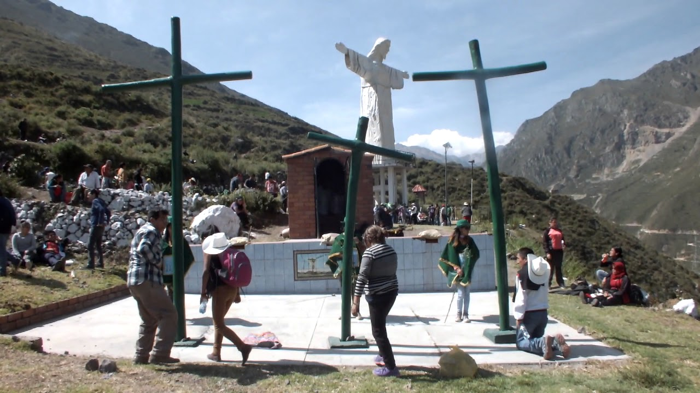

Historia
Guardianes de la Naturaleza: Nuestro Legado en San Mateo
Cómo nuestras generaciones pasadas protegieron este valle y lo que hoy podemos aprender de ello.
Leer artículo
San Mateo de Huanchor, considerado el primer distrito ecológico del Perú y del mundo, se destacó por defender sus derechos ambientales. Entre 1905 y 1930, la fundición Tamboraque operó cerca del distrito, generando preocupación por la contaminación. En 1934, tras la muerte probable por envenenamiento de un trabajador y la falta de apoyo de la empresa, la comunidad reaccionó violentamente contra la fundición, dejando varios mártires que son recordados hasta hoy.
Nuestra MisiónVivimos en una tierra que fue defendida con profunda entrega por personas que entendían su valor ecológico. Gracias a ellos, hoy podemos admirar paisajes llenos de vida. Nuestro compromiso es honrar ese legado: cuidar nuestra comunidad, proteger la naturaleza y mantener viva la identidad que nos une.
Defensor ecológico
Defensor ecológico
Defensor ecológico
Relatos, proyectos y voces que mantienen viva nuestra comunidad.
Explorar comunidadCómo nuestras generaciones pasadas protegieron este valle y lo que hoy podemos aprender de ello.
Leer artículoLas acciones actuales que están transformando nuestro entorno ecológico.
Leer artículo